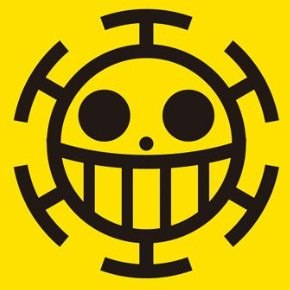

my services
наши Услуги
которые есть в данный момент
услуги красновлосого шанкса
Красноволосый Шанкс — пират и капитан пиратов Красноволосого родом из Вест Блю. Также бывший юнга команды Короля Пиратов Гол Д.
more

услуги от пирато сердца
Пираты Сердца используют субмарину (潜水艦 sensuikan?) под названием Полярный Тан в качестве основного вида транспорта. Впервые она появилась
more
услуги красновлосого шанкса
Красноволосый Шанкс — пират и капитан пиратов Красноволосого родом из Вест Блю. Также бывший юнга команды Короля Пиратов Гол Д.
more